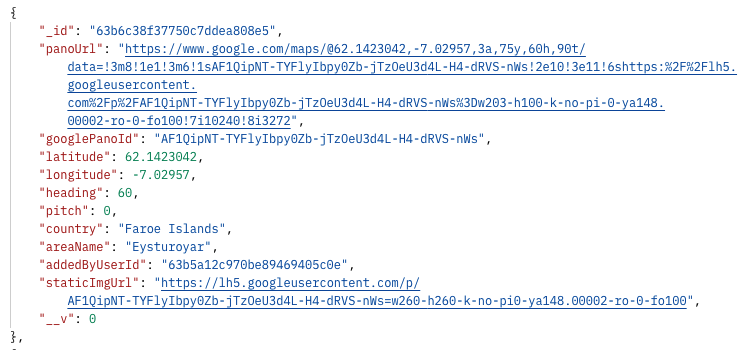
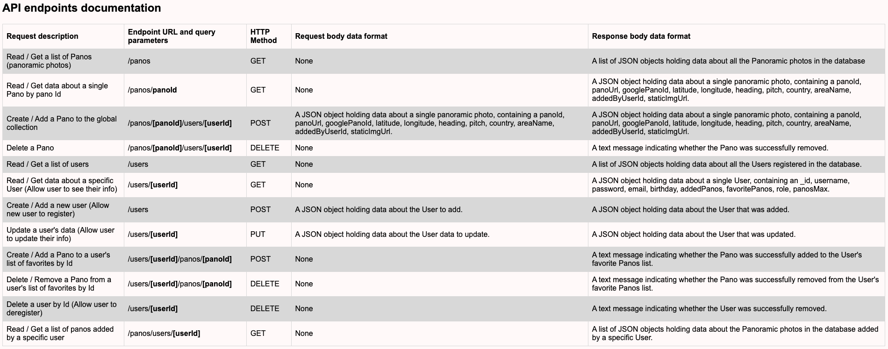
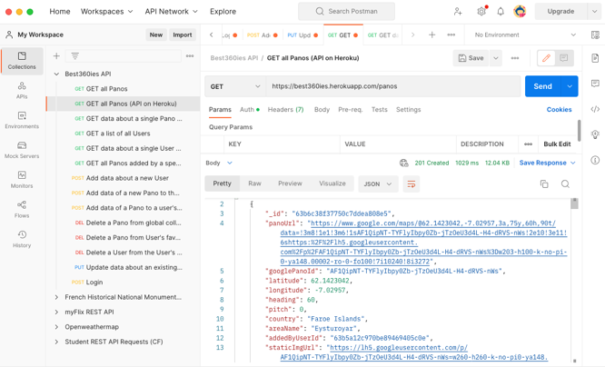
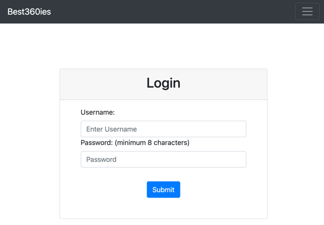
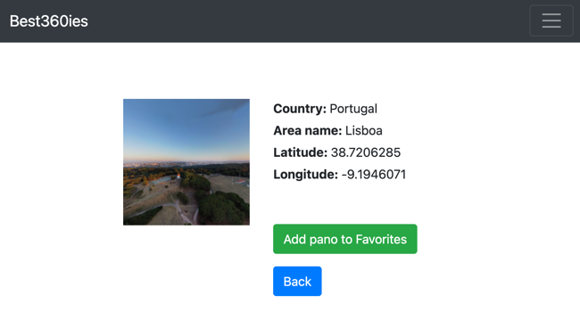
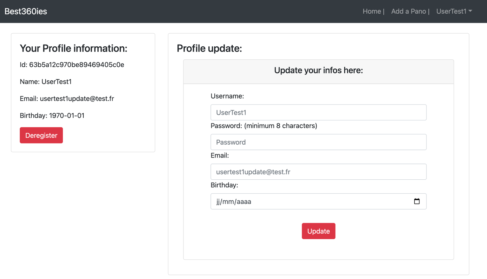

- A collection of 360 panoramic photos -
Best360ies is a web app, developed using the MERN stack, that provides users with the possibility to see some of the world’s best panoramic photos. Users are able to create an account, update their personal data, and create a list of favorite 360ies.
Best360ies was a personal project developed in addition to my full stack web development course at CareerFoundry to demonstrate my mastery of full-stack JavaScript development.
This project also aims at sharing my passion for discovering diverse places worldwide and could serve as a tool for users to enjoy and learn about amazing locations.
The aim of the project was to have unique and ambitious full-stack project I can add to my professional portfolio. This project should also help me with bookmarking my favorite 360ies. Indeed while google map is a great tool for browsing panoramic photos, I could not find a suitable solution to build and share a collection of 360ies I liked.
The problem I wanted to solve is to build the complete server-side and client-side for the application from scratch.
The user’s stories of the Project can be found below:
| API development | Client development | Further Developments (see below for details) |
|---|---|---|
|
|
|
Best360ies Project consists of an API (best360ies-api) as well as a Frontend App (best360ies-client-react) built using React library.
I created a RESTful API using Node.js and Express, that interacts with a non-relational database (MongoDB). The API can be accessed via commonly used HTTP methods like GET or POST. To retrieve data from and store data in the database, CRUD methods are used. The API provides panoramic photos (Panos) information in JSON format.
|  |  |
| JSON Pano Object returned by the API | View endpoints and API documentation |
To test the API, I used Postman. I also included user authentication and authorization code in the form of basic HTTP authentication and JWT authentication. There is a possibility to add (POST) new Panos which is accessible only to a User registered the Admin role. This role is accessible through the created JWT Token.
|  |
| Postman view |
After completing the API, I started to build the interface users would need when making requests to, and receiving responses from, the server-side. It is a responsive application, developed with React and React-Redux. It provides several interface views, including, but not limited to, a main view (shows a list of all panoramic photos), single panoramic photo view (shows data about a single panoramic photo and allows users to add the panoramic photo to their list of favorites), a login view, a registration view and a profile view (where users can update their user data and list of favorites).
|  |  |
| Login view | Single Pano View |
|  |
| User Profile view |
This was my favorite project because I really enjoy the MERN stack and also because of the Project itself that I hope users will love using as much as I loved building and using it. Thanks to this side Project I could get a great understanding of how to build an API and interface it with the Client side. I could also get more confidence using React and in particular how States and Props are working along with Redux.
Thanks to the development of previous web applications based on the MERN stack, I could develop an MVP version of the full Project (back and front) within 3 weeks.
In addition to the mentioned earlier development, I have initiated the following next steps of the development of this App: